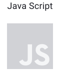
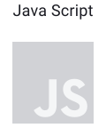

Клиентам
Этот сайт — дипломный проект студента Яндкс.Практикума. Его цель — показать, чему научился студент, и какими технологиями владеет.
Вёртска сайта выполнена по методологии БЭМ. Это делает сайт гибким и масштабируемым. Кроме того, добавлять новые страницы и функциальность проще и быстрее, чем в проектах, выполненных по другим методологиям. Также сайт проще и дешевле поддерживать.
Карточки с новостям приходят с сервера и обрабатываются асихронно. То есть сайт продолжает работать, пока от сервера приходит ответ. Это повышает удобство использования сервиса.
При создании проекта была использона сборка технологией Webpack. Это современных подход к разработке сайтов. Код оптимизируется, а значит, сайт работает быстрее. Также сайт работает в старых браузерах. Даже если посетители — пользователи старых операционных систем у них не будет проблем с отображением. А значит потенциальная аудитория возрастает.
Проект был проверен экспертами Яндекс.Практикума. И если вашему бизесу нужен сайт, мы рекомендуем обратиться к этому студенту.
Используемые технологии
 
